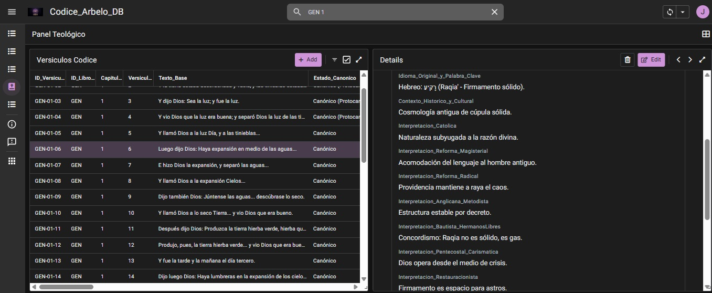

EL CÓDICE ARBELO
Segundo Cerebro Teológico & Existencialismo Gnóstico Crítico
> ESTADO DEL SISTEMA: DESPERTANDO
Bienvenido al Santuario del Código y la Palabra. La historia de la humanidad ha sido dictada por dogmas, fragmentada en miles de denominaciones y controlada por estructuras de poder. El Proyecto Códice Arbelo es una arquitectura de datos diseñada para desmenuzar el libro más influyente del universo: La Biblia.
Aquí no se defiende ninguna iglesia. Se expone la matriz completa. Desde la ortodoxia clásica, hasta el conocimiento oculto de los textos Gnósticos y el análisis de la Inteligencia Artificial.
El texto principal que nutre este Códice utiliza la Reina-Valera 1960 (RVR1960), por ser el "Sistema Operativo" estándar de la teología hispana. Sin embargo, mediante la "Tenacidad del Buscador", cada versículo es sometido a ingeniería inversa, contrastando la traducción tradicional directamente con el Código Fuente Original (Texto Masorético en Hebreo y Textus Receptus en Griego) para exponer fallos, sesgos y secretos milenarios.
> LA TERMINAL SQL EN ACCIÓN: CRUZANDO LA MATRIX
El Códice Arbelo no es solo una página web; es un "Motor Teológico" real operativo en AppSheet. A continuación, puedes ver una captura de alta fidelidad de la terminal procesando el **Génesis 3:15 (El Protoevangelio)**.
Observa cómo la Matrix relacional extrae el código hebreo original, el Existencialismo Gnóstico Crítico, y las interpretaciones de denominaciones clave como el Mormonismo (SUD), el Adventismo y el Judaísmo, desglosando la anatomía de cada sesgo.

> EL GLOSARIO DE LA MATRIX: BLINDANDO EL INTELECTO
Nivelamos el intelecto de los buscadores de la red. Para hackear el sistema teológico, primero debes dominar el lenguaje del núcleo del "Lore" Gnóstico Crítico:
El "arquitecto" o "constructor" del plano material material, a menudo confundido con el Dios Supremo. Es una entidad limitada, ignorante y en ocasiones malévola que atrapó las chispas divinas en cuerpos de carne y materia.
La chispa divina inagotable atrapada en el plano material por los Arcontes. Es el núcleo de la verdadera conciencia y el componente que busca desesperadamente el despertar a través de la Gnosis.
Las entidades limitadas y tiránicas creadas por el Demiurgo para administrar y controlar la Matrix material, manteniendo a la humanidad en estado de ignorancia y atrapada en el ciclo fútil de la existencia material.
La filosofía Arbelo forjada a lo largo de una vida explorando múltiples religiones y disciplinas. Es la lógica implacable y el cortafuegos crítico que cuestiona todo dogma o revelación antes de ser aceptado.
El "código fuente" en hebreo puro de la Biblia, el Texto Masorético es el núcleo que el Códice utiliza para la ingeniería inversa, comparándolo con las traducciones tradicionales como la RVR1960 para exponer alteraciones y sesgos teológicos.
No es fe ciega en un dogma, sino el "conocimiento" directo y liberador de la chispa divina interior y del plano material ilusorio. Es el Glitch del sistema que permite el despertar de la Matrix teológica.
> ARQUITECTURA DE LA MATRIX
Ortodoxia & Reforma
Análisis exhaustivo de las visiones históricas. La anatomía del dogma al descubierto.
La Gnosis (Conocimiento)
El "Glitch" del sistema. Textos apócrifos y la revelación de la chispa divina atrapada en la materia.
Análisis Algorítmico (IA)
Una red neuronal cruzando datos teológicos para encontrar patrones invisibles.
Filosofía Arbelo
La lógica y la "Tenacidad del Buscador" aplicadas a la hermenéutica pura.
> PATCH NOTES: LA EVOLUCIÓN FILOSÓFICA
En sus primeras compilaciones, el Códice operaba bajo la nomenclatura de Existencialismo Crítico Gnóstico. En esa fase, el sistema operativo principal era el cuestionamiento racional (Existencialismo Crítico), utilizando la Gnosis simplemente como un "parche" secundario para entender la realidad ilusoria material.
Sin embargo, a medida que la investigación de Juan Arbelo desenterraba los misterios más densos del código bíblico, la arquitectura del pensamiento se reescribió hacia el Existencialismo Gnóstico Crítico. La Gnosis —la certeza de que somos chispas divinas exiliadas en un universo material manipulado (Demiurgo)— se convirtió en la naturaleza principal de la plataforma. La palabra "Crítico" se movió al final de la sintaxis para actuar como el escudo definitivo: un cortafuegos que indica que el Códice asume la Gnosis, pero nunca ciegamente. Toda revelación es cuestionada implacablemente por la Tenacidad del Buscador antes de ser aceptada.
"El universo es código. Quien entiende el código original, domina su propia realidad."
> TERMINAL DE FEEDBACK Y CRÍTICA
El Códice crece con la colisión de ideas. Este es un espacio abierto para el debate. Deja tus críticas, reflexiones u observaciones en la base de datos pública del proyecto.